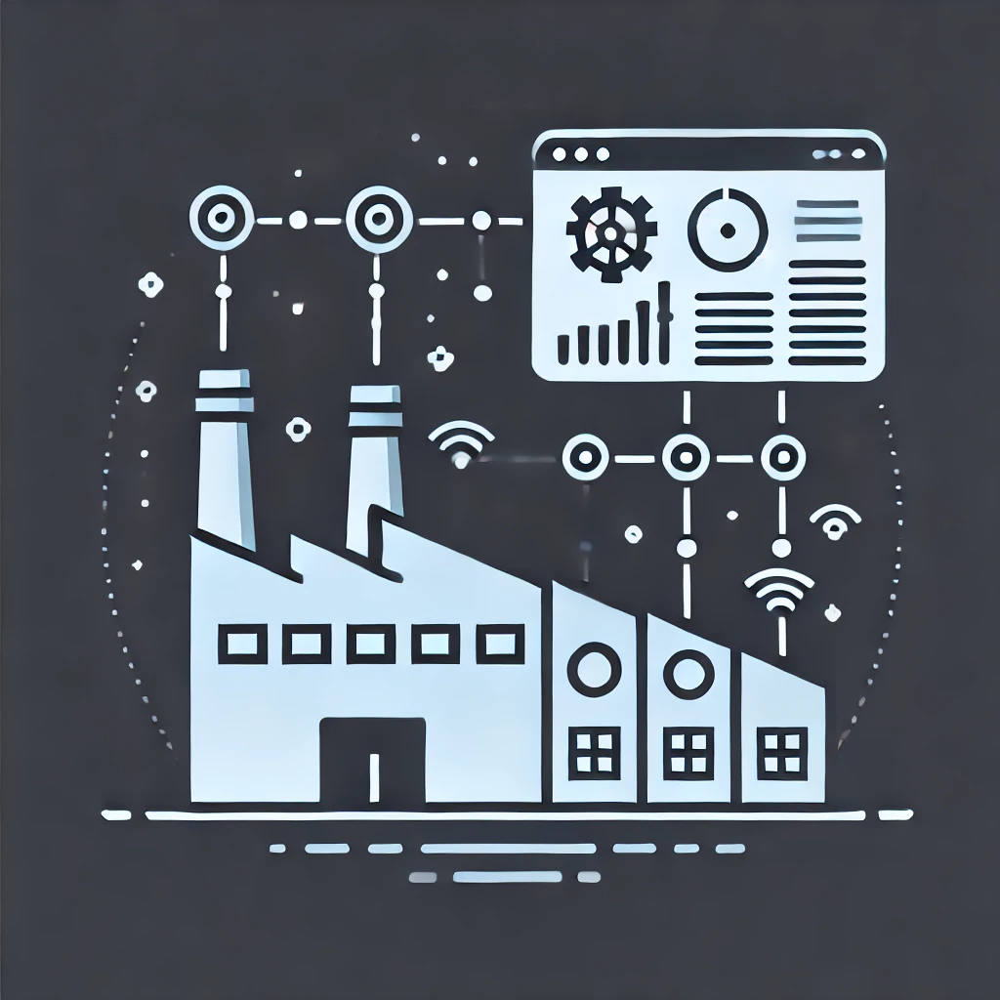
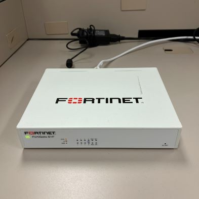

Magna IT
About Magna
Magna is a global automotive parts manufacturing company with over 177,000 employees across 28 countries. Magna offers a wide range of products including body exteriors, power and vision systems, seating systems, and complete vehicle engineering and assembly. They work closely with major automakers and help them develop and produce vehicles with the latest advancements in technology and safety features. This includes pioneering efforts in electric vehicle (EV) systems, autonomous driving solutions, and lightweighting techniques.
About the Role
In my role, I supported the day-to-day operations of the Network and Security Operations
Center department. This included the coordination of projects,
as well as assisting in various tasks of the department and its staff.
Responsibilities:
- Support with firewall administration tasks
- End User Support and network troubleshooting
- Assist with investigations and resolution of network and security incidents
- Participate in incident response activities
- Prepare and deliver reports
- Support with execution of special projects
- Assist with documentation of network configurations, changes and procedures
Projects
Theses are some of the things I worked on:
- Firewall Diagnosis Tool
- Web GUI: Flask
- Back-end: Python
- Front-end: HTML, Jinja2, Bootstrap, and Javascript
- Breach Email Notification Tool (BENT)
- Web GUI: Flask
- Back-end: Python
- Front-end: HTML, Jinja2, Bootstrap, and Javascript
- Simplified the process of sending data breach emails
Reflection on Goals
Learn more about Git. Through the courses at the university, I've gained some pretty basic knowledge about Git (cloning, pushing, committing), but I wanted to learn how to test a new feature by creating a new branch and then merging it into the master branch. Through both of my projects, I was able to get more comfortable with Git and used it to manage both local and remote versions of my code.
Communicate concepts in a simple and effective manner. I occasionally present ideas out of order, making it difficult to follow my explanation. This is really something I want to work on as effective communication is crucial regardless of your profession. To improve my communication skills, throughout the term, I focused on organizing the details in a coherent way before explaining a concept. Near the end of my term, I was tasked with presenting my email tool to its potential users. I created a PowerPoint presentation, drafted a script, and practiced. After presenting, I was told the presentation was clear and easy to follow. I now feel much more confident in my oral communication skills, though I'm still far from where I'd like to be.
Learn more about MES (Manufacturing Execution Systems). I had the opportunity to learn about MES from a senior manager in ERP (Enterprise Resource Planning). He introduced me to various MES concepts, such as sequencing. Additionally, I spoke with an MES analyst who discussed his ongoing projects to see what a career in this field might look like. Prior to my co-op, I was unfamiliar with MES, but now I find it fascinating and wish to delve deeper into it. It appears to be a domain that relies heavily on efficient algorithms and data structures and offers ample room for innovation and growth.
Familiarize myself with Fortinet firewalls. During this term, I was exposed to firewalls for the first time. It was really interesting to learn about how firewalls work, and about their capabilities and features. In addition to completing two Fortinet Cybersecurity certifications, I was also able to get a small unit at my desk to test my firewall diagnosis tool with.
Conclusions
Note: This report is intentionally high-level at Magna's request.
This was my first technical work experience, and it was filled with
of learning, challenges, and fun!
I thoroughly enjoyed the work I did, and it further solidified my goal
of a career in technology.
However, whether it be as
a software developer, a cybersecurity anaylyst, or a machine learning
engineer, I'm still unsure.
Finally, I wanted to touch on the fact that I really feel like my
courses prepared me for the industry (especially CIS*2750). I was able to extrapolate from what
I'd done in my classes and apply my knowledge to define new problems, and develop
and implement solutions for them.